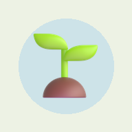

<!DOCTYPE html>
<html lang="en">
<head>
<meta charset="utf-8">
<meta name="viewport" content="width=device-width, initial-scale=1, viewport-fit=cover">
<title>SelfMate</title>
<meta name="description" content="Life admin, money, dates and trips in one calm place.">
<link rel="manifest" href="manifest.webmanifest">
<link rel="icon" href="icon-192.png">
<link rel="apple-touch-icon" href="icon-192.png">
<meta name="theme-color" content="#EDF2E4" media="(prefers-color-scheme: light)">
<meta name="theme-color" content="#14211A" media="(prefers-color-scheme: dark)">
<link rel="preconnect" href="https://fonts.googleapis.com">
<link href="https://fonts.googleapis.com/css2?family=Young+Serif&family=Instrument+Sans:wght@400;600&display=swap" rel="stylesheet">
<style>
  :root { --bg: #EDF2E4; --card: #F8FBF3; --ink: #1D3527; --muted: #5E7266; --line: #D5DEC9; --leaf: #3F8F4F; }
  @media (prefers-color-scheme: dark) { :root { --bg: #14211A; --card: #1C2C22; --ink: #E7F0E1; --muted: #9DB2A3; --line: #2C4033; --leaf: #7CC487; } }
  * { box-sizing: border-box; }
  html, body { margin: 0; height: 100%; background: var(--bg); color: var(--ink); font: 16px/1.5 "Instrument Sans", system-ui, sans-serif; }
  iframe { position: fixed; inset: 0; width: 100%; height: 100%; border: 0; background: var(--bg); }
  .setup { max-width: 420px; margin: 0 auto; padding: 48px 20px; }
  .setup img { width: 96px; height: 96px; border-radius: 26px; }
  h1 { font-family: "Young Serif", Georgia, serif; font-weight: 400; font-size: 32px; line-height: 1.15; margin: 18px 0 8px; }
  p { color: var(--muted); }
  label { display: block; font-size: 14px; color: var(--muted); margin: 18px 0 6px; }
  input { width: 100%; font: inherit; padding: 12px 14px; border-radius: 14px; border: 1px solid var(--line); background: var(--card); color: var(--ink); }
  button { margin-top: 12px; width: 100%; font: inherit; font-weight: 600; border: 0; padding: 13px 16px; border-radius: 22px 5px 22px 5px; background: var(--leaf); color: #fff; cursor: pointer; }
  .err { color: #B8436B; font-size: 14px; min-height: 1.5em; }
  .loading { position: fixed; inset: 0; display: grid; place-items: center; font-family: "Young Serif", serif; color: var(--muted); }
  :focus-visible { outline: 3px solid #F2C14E; outline-offset: 2px; }
  .ask { position: fixed; inset: 0; z-index: 9; display: flex; align-items: flex-end; background: rgba(20,33,26,.45); }
  .ask > div { width: 100%; max-width: 520px; margin: 0 auto; padding: 22px 20px 28px; border-radius: 26px 26px 0 0; color: #F3EEDC;
    background: linear-gradient(165deg, #1B2742 0%, #36406E 65%, #B8736C 140%); }
  .ask b { font-family: "Young Serif", Georgia, serif; font-weight: 400; font-size: 22px; } .ask p { color: #E4DDC8; }
  .ask button.no { background: transparent; color: #F3EEDC; margin-top: 4px; }
</style>
</head>
<body>
<div id="root"></div>
<script>
// SelfMate home: opens your private SelfMate app full-screen.
// Your private link is stored only on this device (localStorage); it is never part of this page or the GitHub repository.
const KEY = 'selfmate_link';
const valid = u => /^https:\/\/script\.google\.com\/macros\/s\/[\w-]+\/exec\?k=[0-9a-f]{20,}$/.test(u);
const root = document.getElementById('root');
let saved = null;
try { saved = localStorage.getItem(KEY); } catch (e) { /* storage blocked: ask every time */ }
if (location.hash === '#forget') {
  try { localStorage.removeItem(KEY); } catch (e) {}
  if (window.caches) caches.delete('selfmate-link').catch(() => {});
  saved = null; history.replaceState(null, '', location.pathname);
}
// Shared from another app (Share → SelfMate): the page opens with ?title=…&text=…&url=…  The notification opens #mood.
const qs = new URLSearchParams(location.search);
let shared = ['title', 'text', 'url'].map(k => qs.get(k) || '').filter(Boolean)
  .filter((v, i, a) => !a.some((x, j) => j !== i && x.includes(v) && (x !== v || j < i))).join(' ').trim();   // apps often repeat the name or link
let openMood = location.hash === '#mood';
if (shared || openMood) history.replaceState(null, '', location.pathname);
let current = '';

function openApp(link) {
  current = link;
  // the notification helper (sw.js) uses the link to ask your SelfMate for tonight's line; it stays on this phone
  if (window.caches) caches.open('selfmate-link').then(c => c.put('link', new Response(link))).catch(() => {});
  let src = link + '&home=1';
  if (shared) src += '&wish=' + encodeURIComponent(shared.slice(0, 1500));
  if (openMood) src += '&open=mood';
  shared = ''; openMood = false;
  root.innerHTML = '<div class="loading">Watering the garden…</div>';
  const f = document.createElement('iframe');
  f.src = src; f.title = 'SelfMate'; f.allow = 'clipboard-write';
  f.onload = () => { const l = document.querySelector('.loading'); if (l) l.remove(); };
  root.appendChild(f);
}
function setup() {
  root.innerHTML = `<main class="setup">
    
    <h1>Welcome to SelfMate</h1>
    <p>Paste your private SelfMate link once. It stays only on this phone, so nobody else can open your app from this page.</p>
    <label for="link">Your private link</label>
    <input id="link" type="url" inputmode="url" autocomplete="off" placeholder="https://script.google.com/macros/s/…/exec?k=…">
    <div class="err" id="err"></div>
    <button id="save">Open SelfMate</button>
    <p style="font-size:14px">Tip: after this, use Chrome's menu → Install / Add to home screen for the 🌱 icon. To remove the link from this phone, open this page with <b>#forget</b> at the end.</p>
  </main>`;
  document.getElementById('save').onclick = () => {
    const u = document.getElementById('link').value.trim();
    if (!valid(u)) { document.getElementById('err').textContent = 'That does not look like a SelfMate link. It starts with https://script.google.com/macros/s/ and ends with ?k= and a long code.'; return; }
    try { localStorage.setItem(KEY, u); } catch (e) { /* will ask again next time */ }
    openApp(u);
  };
}
saved && valid(saved) ? openApp(saved) : setup();
if ('serviceWorker' in navigator) navigator.serviceWorker.register('sw.js').catch(() => {});

// ---------- notifications: SelfMate (inside the frame) asks, this page does it ----------
const reopenForMood = () => { if (current) { openMood = true; openApp(current); } };
window.addEventListener('hashchange', () => { if (location.hash === '#mood') { history.replaceState(null, '', location.pathname); reopenForMood(); } });
if ('serviceWorker' in navigator) navigator.serviceWorker.addEventListener('message', e => { if (e.data && e.data.selfmate === 'open-mood') reopenForMood(); });
// Questions go through the open app (the frame), because that connection is known to work on this phone.
let askId = 0;
const ask = (frame, origin, what, sub) => new Promise((res, rej) => {
  const id = ++askId;
  const done = e => {
    if (e.source !== frame || !e.data || e.data.selfmate !== 'push-answer' || e.data.id !== id) return;
    window.removeEventListener('message', done); clearTimeout(t);
    e.data.answer && e.data.answer.error ? rej(new Error(e.data.answer.error)) : res(e.data.answer || {});
  };
  const t = setTimeout(() => { window.removeEventListener('message', done); rej(new Error('SelfMate did not answer in time. Try again.')); }, 45000);
  window.addEventListener('message', done);
  frame.postMessage({ selfmate: 'push-ask', id, what, sub }, origin);
});
// Says which step failed, because the phone's own messages don't.
const step = (name, p) => p.catch(err => { throw new Error(name + ': ' + (err.message || err)); });
const b64 = s => { const t = atob(s.replace(/-/g, '+').replace(/_/g, '/') + '==='.slice((s.length + 3) % 4)); return Uint8Array.from(t, c => c.charCodeAt(0)); };
async function subscription() {
  if (!('serviceWorker' in navigator) || !('PushManager' in window)) return null;
  const reg = await navigator.serviceWorker.ready;
  return reg.pushManager.getSubscription();
}
// Our own question first (a tap here also lets the phone show its permission prompt), then the phone's.
function permission() {
  if (Notification.permission !== 'default') return Promise.resolve(Notification.permission);
  return new Promise(res => {
    const box = document.createElement('div'); box.className = 'ask';
    box.innerHTML = '<div><b>🌙 An evening reminder?</b><p>Once a day, at the time you chose, with a short thought for the evening. Nothing else.</p>' +
      '<button id="yes">Allow notifications</button><button class="no" id="no">Not now</button></div>';
    document.body.appendChild(box);
    box.querySelector('#yes').onclick = async () => { box.remove(); res(await Notification.requestPermission()); };
    box.querySelector('#no').onclick = () => { box.remove(); res('default'); };
  });
}
async function pushOn(link, frame, origin) {
  if (!('serviceWorker' in navigator) || !('PushManager' in window) || !window.Notification) throw new Error('This browser cannot show notifications. Use Chrome.');
  const perm = await permission();
  if (perm === 'denied') throw new Error('Notifications are blocked. Allow them in the phone settings (Apps → SelfMate → Notifications), then try again.');
  if (perm !== 'granted') throw new Error('Notifications were not allowed.');
  const { key } = await step('Asking SelfMate for its key', ask(frame, origin, 'key'));
  const reg = await navigator.serviceWorker.ready;
  let sub = await reg.pushManager.getSubscription();
  const same = sub && sub.options && sub.options.applicationServerKey && btoa(String.fromCharCode(...new Uint8Array(sub.options.applicationServerKey))).replace(/\+/g, '-').replace(/\//g, '_').replace(/=+$/, '') === key;
  if (sub && !same) { await sub.unsubscribe(); sub = null; }
  if (!sub) sub = await step("Signing up with the phone's notification service", reg.pushManager.subscribe({ userVisibleOnly: true, applicationServerKey: b64(key) }));
  await step('Saving this phone in SelfMate', ask(frame, origin, 'sub', JSON.stringify({ endpoint: sub.endpoint })));
  // The notification itself fetches tonight's line directly. If that is blocked it still comes, using the saved lines; say so.
  return fetch(link + '&push=line').then(r => r.json()).then(() => '').catch(err => 'Notifications on 🔔 (direct connection failed: ' + (err.message || err) + '; the reminder still comes, using saved lines)');
}
async function pushOff(frame, origin) {
  const sub = await subscription();
  if (!sub) return;
  await ask(frame, origin, 'unsub', JSON.stringify({ endpoint: sub.endpoint })).catch(() => null);
  await sub.unsubscribe();
}
const isOn = async () => !!(window.Notification && Notification.permission === 'granted' && await subscription().catch(() => null));
window.addEventListener('message', async e => {
  if (!/^https:\/\/[\w-]+\.googleusercontent\.com$/.test(e.origin) || !e.data || !current) return;   // only your SelfMate, inside this page
  const reply = m => e.source && e.source.postMessage(Object.assign({ selfmate: 'push-status' }, m), e.origin);
  try {
    if (e.data.selfmate === 'hello') {
      if (window.caches && Array.isArray(e.data.lines)) caches.open('selfmate-link').then(c => c.put('lines', new Response(JSON.stringify({ lines: e.data.lines, offset: e.data.offset || 0 })))).catch(() => {});
      reply({ subscribed: await isOn() });
    }
    if (e.data.selfmate === 'push-on') { const note = await pushOn(current, e.source, e.origin); reply({ subscribed: true, changed: true, note }); }
    if (e.data.selfmate === 'push-off') { await pushOff(e.source, e.origin); reply({ subscribed: false, changed: true }); }
  } catch (err) { reply({ subscribed: await isOn(), error: err.message || String(err) }); }
});
</script>
</body>
</html>
